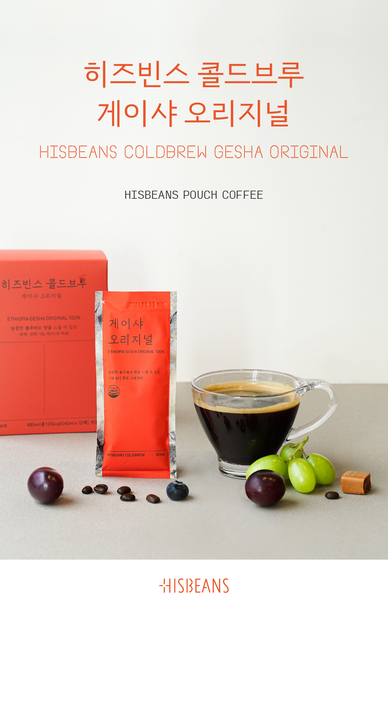

히즈빈스 게이샤 콜드브루는 안전합니다.
최근 뉴스에 일부 업체의 더치커피에서 대장균이 검출되었다는 내용이 보도되어
차가운 물로 추출하는 콜드브루의 위생에 불신이 생기게 되었습니다.
하지만 히즈빈스 게이샤 콜드브루는 자가품질검사(발행번호 R20201029-0031)에서
납, 세균수, 대장균군, 허용 외 타르색소 모두 0.0으로 인증받아 판매를 시작하였으며,
기사에 나온 식약청의 불시 온라인 주문 검사에서도 대장균 무검출로 통과한 제품입니다.
저희 제품은 원두 로스팅에서부터 포장 과정 모두 오염이 있을 수 있는 일반 시설이 아닌
HACCP 인증을 받은 곳에서 진행되고 있으니 안심하고 드세요 ^^

| 상품명 | |
|---|---|
| 성분 및 형태 | |
| 제조일 | |
| 소비기한 |